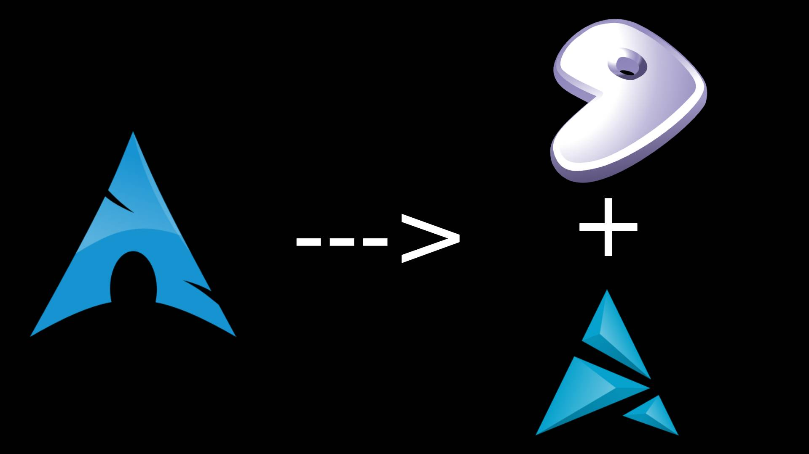
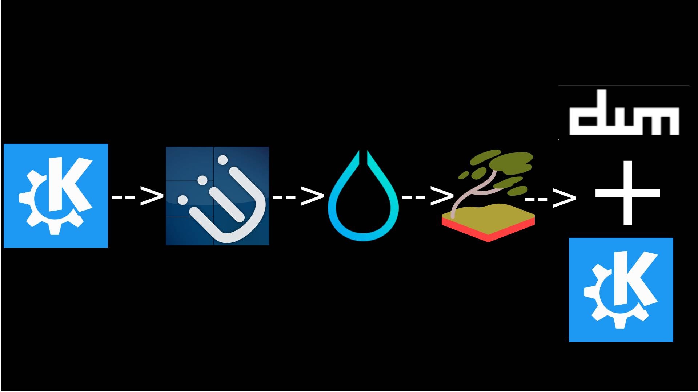

What is GNU/Linux
GNU/Linux is a free and open-source operating system that gives users control over their system. It comes in many distributions, from beginner-friendly desktops to minimal setups like dwm, GNU/Linux focuses on security, transparency, and user freedom.
Richard Stallman the creator of gnu talking about how he started the gnu project
Linus Torvalds the creator of linux and git talking
This was written by me on 2025/12/23 21:51:50
linux is the best
Section 1 - My distro journey

Arch
I First started using arch linux on early 2025 I think the reason I picked it was because I wanted to use a minimalist "cool" distro but after using arch for around a year I realised I wanted more control and a systemd-less distro
Gentoo
I started using gentoo around ~3 months ago and it was because of how gentoo truly gives you full control over your machine and how optimized and fast it was, I manually installed gentoo using the command line and after hours of compiling I had a tty and from there I went and installed my window manager
Artix on my laptop
On my thinkpad I first ran gentoo too but I realised I need a backup device that just works with a desktop environment that just works instead of a window manager, and since I did have a good time with arch but disliked systemd I decided to install artix, which is arch without systemd and its running KDE plasma
Section 2 - my DE/WM journey

KDE Plasma
KDE plasma was my first desktop environment and I really enjoyed it its modern it looks good its similar to windows and its VERY customizable and the DE I recommend to all new users I stopped using it because I wanted something more minimal
i3wm
i3wm was my first window manager and it was nice but I didnt keep using it for a long time because I didnt like that it didnt automaticly tile windows
hyprland
I enjoyed using hyprland it was the first window manager I really customized, I spent HOURS customizing my bar it is very flashy and has a bunch of animations I stopped using it because I realised I wanted a more minimal setup
sway
after being in hyprland a while I moved to sway becuase as I said I wanted a more minimal setup, sway is just i3wm in wayland, I liked sway but it was wlroots and I didnt like it, I customzied it too but then I found out about DWM, my love
dwm
dwm is what I currently use and I LOVE IT it's a extremely minimal and instead of how other packages work where you download a binary file and edit a .config file, you edit the source code in C patching and changing it
KDE plasma on my laptop
in the picture I made you can see I showed I use dwm AND kde plama and its because my laptop runs kde plasma on artix linux
OPEN SOURCE FREEDOM
GNU/Linux is built on open-source software, giving you full control to inspect, modify, and share your system without restrictions.
LIGHTWEIGHT AND FAST
From full desktop environments to minimal window managers like dwm, GNU/Linux runs fast even on low-end hardware.
LEARNING AND CUSTOMIZATION
Perfect for learning how operating systems work, scripting, compiling software, and building a system your way.
SECURITY AND PRIVACY
Strong permission systems, transparent code, and no forced telemetry make GNU/Linux a privacy-respecting platform.
COMMUNITY SUPPORT
Backed by a massive global community with forums, wikis, and documentation for every distro and use case.
CHOICE OF DISTROS
Choose from hundreds of distributions like Arch, Debian, Fedora, or Mint all made for different needs.